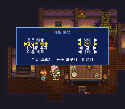
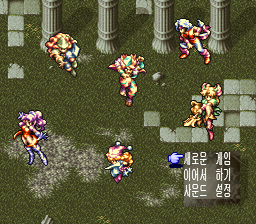
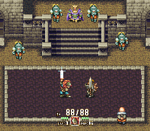

게임 소개
여섯 주인공 가운데 셋을 골라 파티를 짜고, 레벨에 따라 빛·어둠 계열로 전직하며 마나의 검을 찾아가는 액션 RPG입니다. 이 패치는 이미 나와 있는 2017년 한글판 위에 치트만 더합니다. 한글 번역 자체는 한글판 제작진(미러리, 네네쫭, 3phq, narshe, pfhdsf, 아루미)의 작업입니다.
- 원작
- 성검전설3 (스퀘어, 슈퍼패미컴)
- 발매
- 1995년 9월 30일 (일본)
- 장르
- 액션 RPG
- 바탕
- 2017년 한글판 (6MB 롬, 최종 수정 2017/05/17)
치트 메뉴
필드에서 L+R을 누른 채 Select를 누르면 치트 메뉴가 열립니다. ↑↓로 고르고 ←→로 바꾸며, B나 Start로 닫습니다. 메뉴가 열려 있는 동안 게임은 멈춥니다.
| 루크 배율 | 1~5배. 상자·이벤트로 얻는 루크가 배율만큼 늘어납니다 (최대 9,999,999). |
|---|---|
| 경험치 배율 | 1~5배. 몬스터를 쓰러뜨려 얻는 경험치가 배율만큼 늘어납니다. |
| HP·MP 유지 | 켬이면 파티의 HP·MP를 항상 최대로 유지합니다. 이미 쓰러진 동료는 되살리지 않습니다. |
| 이동 속도 | 1배 / 2배. 방향키로 걸을 때만 빨라집니다 (컷신의 정해진 이동은 그대로). |
처음 값은 모두 1배·끔이라 메뉴를 건드리지 않으면 원래 게임과 같습니다. 설정은 게임을 켤 때마다 처음 값으로 돌아갑니다(세이브에 저장되지 않음). 모든 기술 배우기는 캐릭터별 기술 칸 수가 정해져 있고 다른 캐릭터의 기술을 넣으면 게임이 멈출 수 있어 넣지 않았습니다.
화면



적용 방법
2017년 한글판 롬 준비
헤더 없는 6MB(6,291,456바이트) 롬이어야 합니다. CRC32
C0DB7517, SHA-166848372b8b09b6ddc3aa0fd0154637a6a99a549.패치 적용
RomPatcher.js(웹)나 Floating IPS(PC)로 적용합니다. 결과 롬 CRC32는
EEF271A1입니다.실행
Snes9x 같은 에뮬레이터에서 실행합니다. 한글판에서 쓰던 세이브를 그대로 이어서 쓸 수 있습니다.
이 IPS는 2017년 한글판 롬용입니다. 일본판 원본이나 다른 한글판에는 맞지 않습니다.
알려진 문제
- 치트 메뉴는 필드 화면에서만 열립니다. 상태 화면·링 메뉴·월드맵처럼 화면 구성이 다른 곳에서는 L+R+Select를 눌러도 열리지 않습니다.
- 전직 조건 완화는 넣지 못했습니다. 전직 레벨 검사가 이벤트 스크립트 안에 있어 위치를 찾지 못했습니다. 대신 경험치 배율로 전직 레벨에 빨리 도달할 수 있습니다.
- 후반 지역과 보스전은 직접 끝까지 플레이해 보지 못했습니다. 이상한 점이 있으면 제보해 주세요.
바뀐 점
- 게임 안 치트 메뉴 추가 (필드에서 L+R+Select)
- 루크·경험치를 고정값 대신 1~5배 배율로 변경
- HP·MP 유지를 켜고 끌 수 있게 변경
- 이동속도 2배 추가
- 루크 최대, HP·MP 유지, 경험치 4배 추가
치트 메뉴 글꼴: 갈무리(Galmuri) — SIL Open Font License. 어셈블러: Asar.